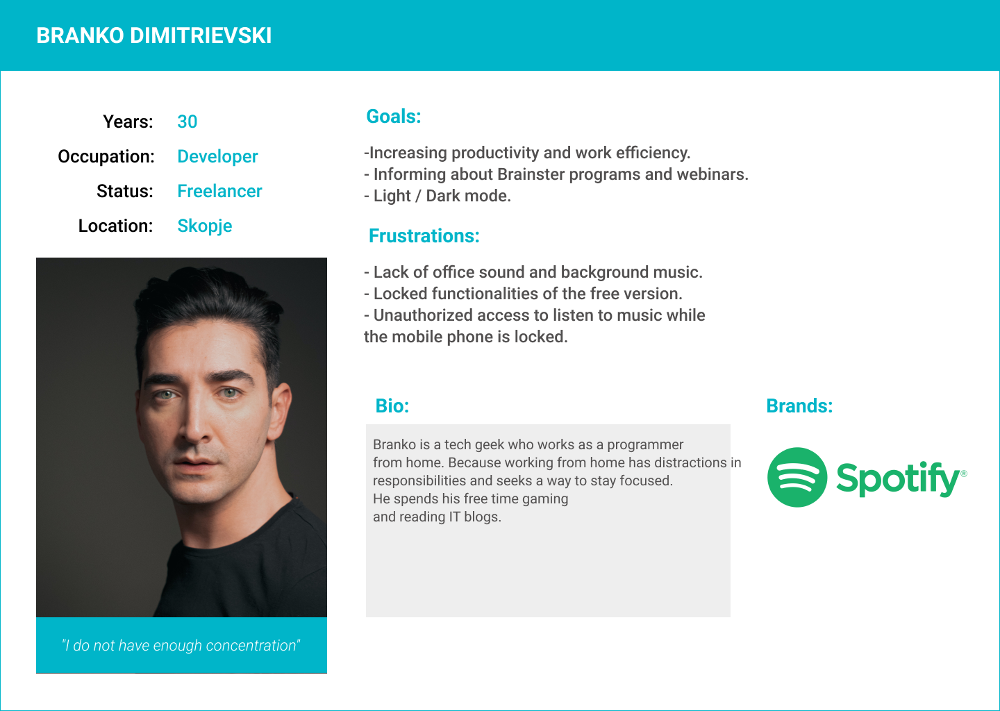
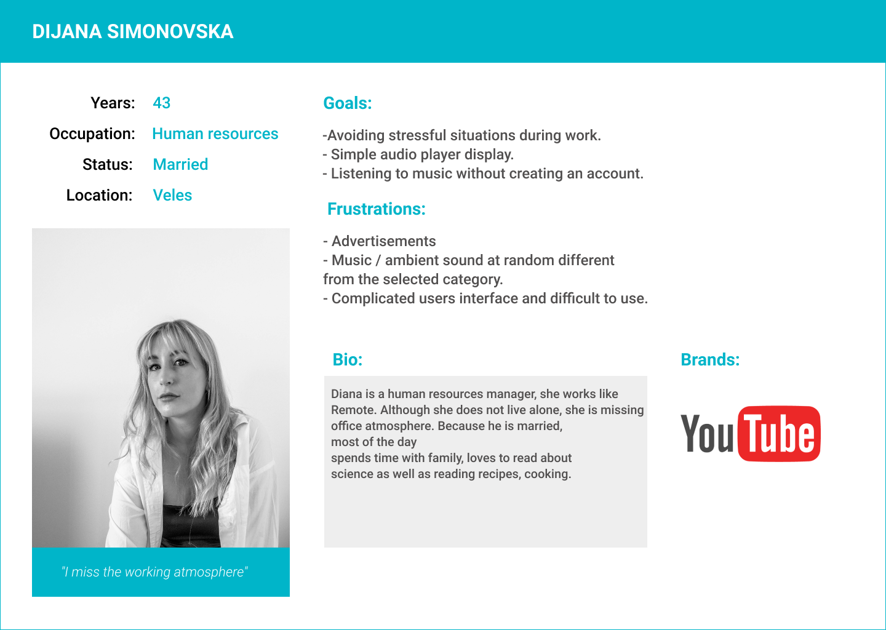
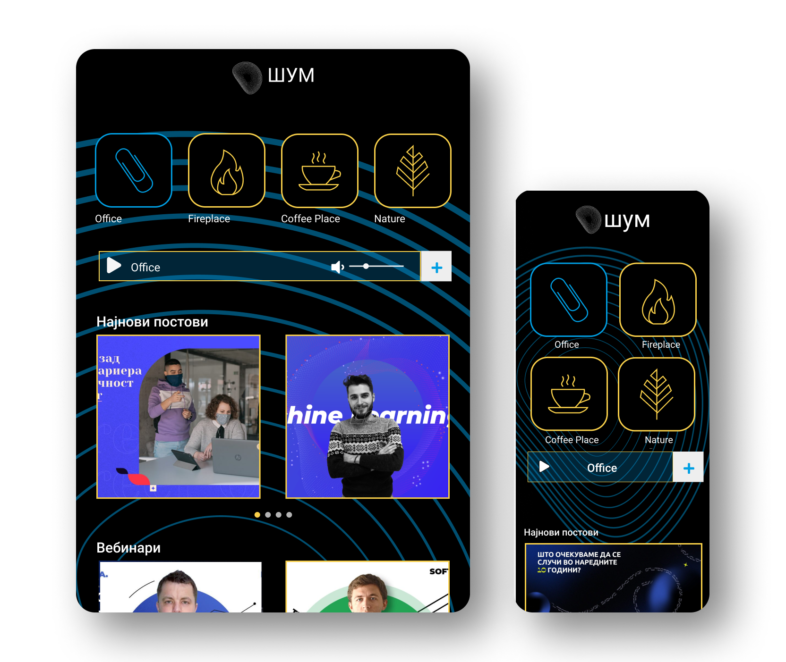

Brainster is an educational center that organizes courses and academies designed to master the most sought after skills today by working on real projects for real clients. Through Brainster, young people can start building the careers they desire in some of the highest paid IT professions today.
Brainster's new platform is a radio player that should be responsive, ie intended for desktop, tablet and mobile. It is a simple player that will offer a choice of 4 categories of music (type of music), and after selecting each category opens the possibility for the user to additionally select one of the additional sounds. The 4 categorize of sounds are:
1. Office noise, options Music, Busy Office, Rain.
2. Coffee Shop noise, options Rain, Music, traffic.
3. Fireplace noise options Rain, Music, wind, thunderstorm.
4. Forest noise options Birds, wind.
This platform is designed for everyone working remotely from home and want to feel and listen to sounds and noise that will help them be more productive while working. Noise and sounds from different ambients will make their work more productive and creative.
The biggest challenge regarding this project was the short period of time we had. Since it was a hackathon in which we competed together with 7 other teams, we had a time of 48h from receiving the brief to the final presentation of our design. But other than that I did not know the designers I was grouped with well enough and we worked together for the first time.
In order to be able to deliver our design on time, we first agreed which methods we will apply and how much time we will devote to each of the steps for designing our product.
Prior to the scheduled interview with stakeholders, we first made a detailed review of the submitted brief, followed by a competitive analysis. this method has helped us to clearly define our competitors. We made a list of direct competitors, then through this method we managed to research and analyze in detail the products of our closest competitors. What does the design of their product look like, what functionalities does it offer, what functionalities are left out. And all this gave us a clearer picture of our product, which functionalities we want to add, and they are not available anywhere on the market.
The next step was to prepare the questions for the interview with our client. After this interview we knew exactly what our client's goals are and what the platform should contain.
Based on the interviews we conducted with the client and our users, we were able to define the functional and non-functional requirements of the platform as well as the business goals.
Functional requirements:
- The platform should enable users to quickly and easily select the appropriate sound for them, which will help them improve their productivity and focus during the working day.
- The platform should give users access to Brainster news, where they can be informed about the news in Brainster and the academies it offers.
Non-functional requirements:
- The platform should be available at all times and have high bandwidth.
- The interface of the platform should be user-friendly, so that users can easily use it.
- The design of the platform should be responsive and adaptive, so that users can use the platform from different devices.
Business requirements:
- No defined business goals (ie direct monetization through the platform), steakholder aims for a positive user experience on the platform, but maybe through blog posts users would be more informed about Brainster and their academies which would lead to an increase in number of students.
We noticed that our target group is mainly young people from the digital world who usually work as Remote or as Freelancers from 25-45 years old. So order to get to know our customers better, their wishes and needs, we decided to do interviews with 15 respondents. That is, each of the team members had to find 3 respondents who will be employed (and at different ages) and will interview them using zoom or skype. After the interviews, all the team members were collected and the answers were analyzed, based on which we got 2 persons.
 Through this method we managed to create a detailed profile of our user. What are their interests, fears, frustrations, inspirations and desires. The closer we get to our customers, the easier it is to see what their needs are, how our product can improve their quality of life, how our product can become part of their daily life.
Taking into account everything we found out during the research, each member of the team created low fidelity wireframes, from which, after a joint discussion, high fidelity wireframes were created. The official wireframes were followed by the UI section. Regarding this part, we had a meeting with the graphic design team from which we received an already prepared Brandbook with logo and icons that we used in our design which you can see on the following screens.
The learning outcomes of this project for me were mostly based around collaboration and teamwork. Taking into account the short period of time that we had at our disposal and everything that we managed to complete in such a short time, it helped me to realize how important a good organization is for the timely delivery of the final product.
Created by Olivera Bojchevska 2021 All rights reserved